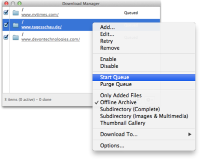

|
Window > Download Manager
opens DEVONthink Pro Office's Download Manager panel. Using the Download Manager, you can download files or complete web sites from the Internet, and either store the information in your database or as files on your hard drive. Offline archives stored in DEVONthink Pro Office are also used when you visit bookmarks or open a link in a new tab and your computer is currently offline.

Panel elements
The Download Manager panel consists of:
- A list of a items to be downloaded
- A status bar at the bottom
- A + button for adding items to and a - button for deleting selected items from the list
- A reload button (backwards arrow)
- A go/stop button (play/pause icons)
- An Action menu (gear icon)
Adding files
To download a web site or any other file, simply add it to the Download Manager by dragging its URL to the Download Manager panel. Alternatively, you can click the + button in the panel and add the URL manually, as well as a referrer, user name, and password. If Automatic is checked, DEVONthink Pro Office creates a referrer automatically when downloading whole web sites.
You can also paste one or more URLs (copied Safari bookmarks, DEVONthink Pro Office links, or copied links from DEVONagent Pro's Download Manager), or add files to the Download Manager by using the contextual menu in web and HTML views. ⌥ clicking a link also adds it to the Download Manager.
|
Note: You can also copy URLs in the Download Manager to the Clipboard or drag them to other applications (like the Finder or Safari's bookmark manager). The Download Manager also supports URLs for local files (POSIX path, a "file://localhost/" URL, or a "file:///" URL).
|
The action menu
Most actions are available through the Action menu or the contextual menu. Click the gear button or ⌃ click an item in the Download Manager panel to display more commands:
-
Add: Add another file to the list.
-
Edit: Edit the parameters of a selected item in the list.
-
Retry: Attempts to reload an item that failed to download.
-
Remove: Removes the selected items from the list. Alternatively, you can press the Delete key.
-
Enable/Disable: Checks or unchecks the selected items. Only checked items will be downloaded.
-
Start/Stop Queue: Starts or stops the download queue. Same as the play/pause buttons at the bottom of the panel.
-
Purge Queue: Removes all items from the list that have been completely downloaded.
-
Only Added Files to Thumbnail Gallery: Offers various predefined option sets (see below).
-
Import Files to Database: Selects which database the downloaded files shall be stored in. Select Folder to save them directly to the file system.
-
Options: Opens the options dialog sheet, which allows you to specify in detail what to download, which links to follow, and where to store the downloaded files (see below).
For your convenience, DEVONthink Pro Office comes with predefined option sets that you can directly select from the action menu.
-
Only Added Files: Downloads only the files you have manually added to the Download Manager.
-
Offline Archive: Downloads the files you have added to the Download Manager including embedded images, style sheets, and scripts. Use this option set to archive/download web pages with everything necessary to display them properly. Alternative: Create a web archive.
-
Subdirectory (Complete): Downloads the files you have added to the Download Manager including all embedded or linked files. This option set follows all links leading to (items in) sub-directories. For example, use this option set to download a complete web site for offline archiving.
-
Subdirectory (Images & Multimedia): Same as above, but downloads only linked images, linked multimedia files including Flash and QuickTime movies, and embedded images in the item's directory and all sub-directories. Use this set to download a complete web site for offline archiving (without all linked Office documents, PDFs, etc.)
-
Thumbnail Gallery: Downloads the files you have added to the Download Manager including linked images, embedded images, style sheets, and scripts. Use this option set to download a thumbnail gallery including all full-size images linked to each thumbnail for offline archiving.
|
Note: Downloaded items are by default excluded from classification and tagging.
|
Options
The options dialog defines which file types the Download Manager downloads, which links it follows, and where it stores the files.
-
Files: Check all file types you want the Download Manager to download (plain texts, rich texts, Office documents and PDF files, style sheets and scripts, images, embedded images, multimedia files, mark-up language files, etc.) Use the Follow Links pop-up menu to define how far DEVONthink Pro Office should follow links on the downloaded HTML pages (see below). Check Overwrite existing to update an existing archive.
-
Folder: When you choose Download to > Folder in the action menu of the Download Manager panel, DEVONthink Pro Office stores all downloaded items in the directory you specify. Click Set to choose your preferred location. Use this option to use the integrated Download Manager for downloading software archives or other files you don't want to store in your database. Double-click any part of the location to reveal it in the Finder.
-
Download: Define how many connections the Download Manager opens at the same time. (Choose fewer connections for slower Internet connection, more for DSL or broadband.) Also, check Automatically purge queue to have previously downloaded items automatically removed from the queue.
The Follow Links options defines how far DEVONthink Pro Office follows links on the downloaded HTML pages. This feature allows you to control what gets downloaded--only the actual pages or a complete web site. DEVONthink Pro Office supports the following options:
-
Off: Does not follow any links.
-
On Same Host: Follows links, but only as long as they refer to the same web server/web site. Files on other web servers will not be downloaded.
-
In Same Directory: Follows links, but only as long as they refer to items in the same directory as the downloaded HTML page.
-
In Subdirectories: Follows links, but only as long as they refer to items in the same directory as the downloaded HTML page or its sub-directories.
-
One Level: Follows all links regardless of where they point to, but only one level deep. Links on pages linked to from the original page are not downloaded.
-
Two Levels: Follows all links regardless of where they point to, but only two levels deep. Attention: This can result in very large downloads!
|